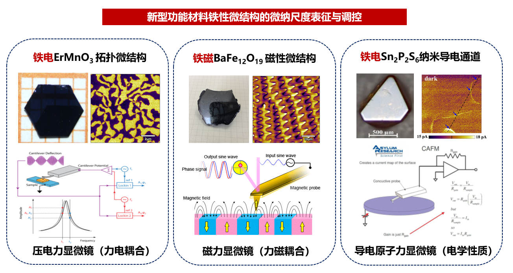
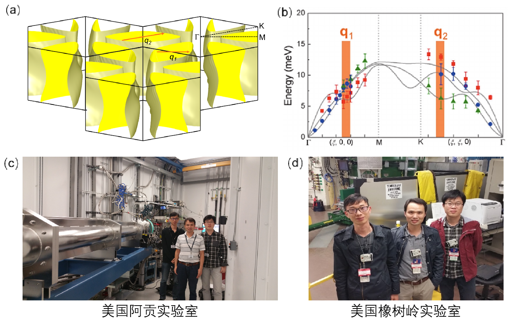
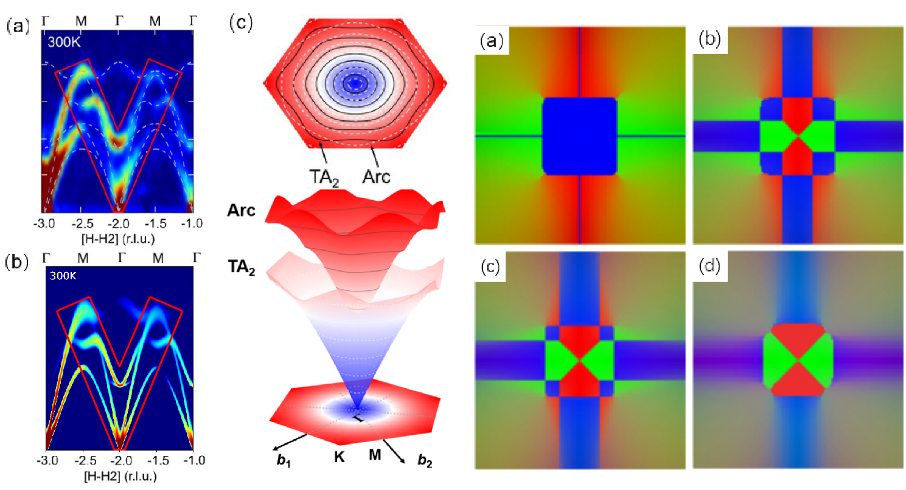

Research
From coupled phenomena at the microscale to the design of materials and structures.
Electromechanical Coupling Effects and Novel Physical–Mechanical Behaviors in Advanced Functional Materials
Advanced functional materials exhibit outstanding multiphysics coupling properties involving mechanical, electrical, magnetic, thermal, and optical fields, and have found broad applications in frontier areas such as aerospace, advanced manufacturing, clean energy, artificial intelligence, and biomedicine. Research on multiphysics-coupled mechanics in advanced functional materials lies at the intersection of mechanics, physics, and materials science, and has become a frontier and hotspot in solid mechanics.
Flexoelectricity is a novel electromechanical coupling effect that describes the interaction between strain gradients and electric polarization in materials. At the micro- and nanoscale, sharply enhanced strain gradients make flexoelectricity play an important role in the coupled mechanical, electrical, thermal, magnetic, and optical properties of functional materials. This research direction is devoted to the development of first-principles computational methods and experimental characterization techniques for intrinsic flexoelectricity in low-dimensional materials. It covers the synthesis of low-dimensional crystals, characterization of flexoelectric effects, and the exploration of anomalous physical behaviors induced by flexoelectricity at micro- and nanoscales, including fundamental flexoelectric theory and computational methods, bending expansion and asymmetric mechanical behaviors in ferroelectric materials, giant spontaneous polarization in freestanding thin films, regulation of surface/interface electronic transport, flexoelectricity-induced novel ferroelectric domain structures, and unusual flexo-photovoltaic, flexo-magnetic, and pyroelectric effects. These studies provide both theoretical and experimental support for the design of novel flexoelectric MEMS components and devices.

Design of Macroscopic Metamaterials Inspired by Novel Physical Properties of Micro-/Nanomaterials
Materials at micro- and nanoscales often exhibit novel physical and mechanical properties, such as superlubricity, ultraflexibility, negative thermal expansion, negative compressibility, negative Poisson’s ratio, and nonreciprocal bending behavior. The physical mechanisms underlying these properties provide rich inspiration and design principles for macroscopic metamaterials. Structural biomimetic design, which mimics the structural features of biological tissues to achieve similar functionalities, has become an important source of innovation in metamaterials research. This research direction extends the concept of imitation from biological tissues to microscopic building blocks such as crystal lattices, molecules, and even atoms, and seeks to design new metamaterials by mimicking physical mechanisms at the micro- and nanoscale.
Examples include polycrystal-inspired high-strength construction materials motivated by grain-boundary strengthening mechanisms in polycrystalline metals, and topological mechanical metamaterials with anomalous nonreciprocal elastic responses inspired by the topological atomic structures of pyrochlore crystals. This research direction aims to build a bridge between the physical properties of micro-/nanomaterials and those of macroscopic structures, and to apply the underlying physical mechanisms of micro-/nanomaterials to the design of metamaterials with novel mechanical and physical functionalities. This work not only provides innovative design strategies for mechanical metamaterials, but also offers an effective route for extending exotic micro-/nanoscale material properties to macroscopic applications, with strong potential for use in major industrial equipment and systems.

Construction, Characterization, and Regulation of Functional Microstructures via Scanning Probe Techniques
This research direction is based on the group’s high-precision atomic force microscopy platform. At the micro- and nanoscale, a variety of multimode scanning probe techniques are employed under multiphysics coupling conditions, including piezoresponse force microscopy (PFM), electrostatic force microscopy (EFM), Kelvin probe force microscopy (KPFM), conductive atomic force microscopy (c-AFM), magnetic force microscopy (MFM), and scanning microwave impedance microscopy (sMIM), to investigate ferroelectric, ferromagnetic, ferroelastic, and multiferroic single crystals and ceramics.
The research mainly focuses on the observation and manipulation of mechanical properties and microscopic domain structures in ferroelectric, ferromagnetic, and ferroelastic materials at micro- and nanoscales, with the goal of realizing novel phenomena and multifunctionality under the excitation of mechanical, electrical, thermal, magnetic, and optical fields. These studies provide scientific insights and application platforms for the future development of micro-/nanoelectronic devices.

Lattice Dynamics and Novel Thermal Properties of Advanced Materials
Advanced materials with unusual thermal transport properties are of great importance for applications in energy, environment, aerospace, and integrated circuits. Effective thermal management plays a critical role in improving device stability, service lifetime, and energy efficiency. This research direction targets materials with extremely low or high thermal conductivity that are of significant application interest. By combining advanced inelastic scattering techniques based on large-scale facilities such as neutron sources and synchrotron radiation sources with first-principles simulations, the research focuses on thermoelectric materials, ferroic materials, and emerging phase-change energy-storage materials.
Through investigation of the linear and nonlinear interatomic interactions and collective atomic vibrations (phonons) within materials, this research seeks to design and regulate thermal transport properties and the possible coupled mechanical–thermal–electrical effects therein, thereby providing a scientific basis for the development of advanced materials with novel thermal transport behaviors.

High-Performance Computing and Software Development
This research direction employs first-principles calculations to perform atomic-scale simulations of the mechanical, electrical, optical, thermal, and magnetic properties of advanced materials. Supported by the group’s computing servers, the Tianhe-2 supercomputer, and other high-performance computing resources, and combined with machine learning and big-data mining techniques, this work aims to accelerate the discovery and application of new materials. At the same time, the group actively develops related high-performance computational methods, program codes, and software tools.
For example, the group has developed program codes for calculating material properties under external electric fields and established efficient and high-accuracy first-principles methods for magneto-mechanical coupling. More recently, the group developed proprietary software for simulating four-dimensional dynamical structure factors in inelastic neutron/X-ray scattering. The virtual experimental techniques built on this software can substantially improve the efficiency of phonon-property measurements and greatly simplify related data processing.

Machine Learning-Enabled Theoretical Design and Discovery of New Materials
With the rapid development of high-performance computing and artificial intelligence, materials design and discovery have entered the “fourth paradigm.” This research direction focuses on the theoretical design and discovery of advanced functional materials. By integrating quantum-mechanics-based first-principles calculations with data-driven machine learning and artificial intelligence methods, and leveraging the group’s in-house high-performance CPU/GPU computing clusters as well as national supercomputing resources, this work explores novel materials with unusual properties to meet major national strategic needs.
Through investigations of material properties, mechanisms, and crystal structures, this research aims to establish structure–property relationships and provide theoretical guidance for experiments. Major topics include the theoretical design of energy and optoelectronic materials, crystal structure prediction, the development of machine-learning interatomic potentials, and related software development.